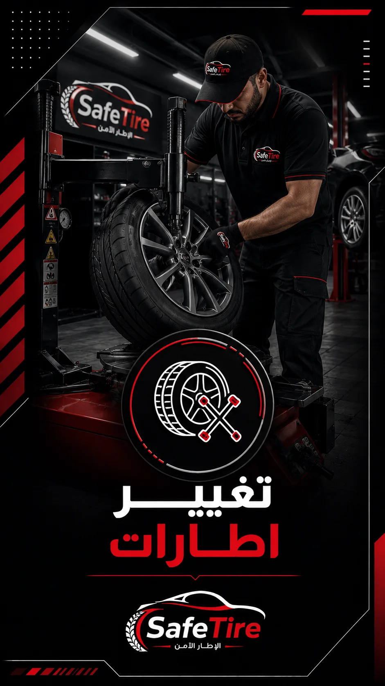

Social Design System
Safe Tire
A repeatable automotive content system built for service communication, stories and highlight navigation.

Challenge
Turn a wide service list into consistent, quickly readable content without every post feeling identical.
Approach
A black-and-red modular framework combines photographic service cues, focused typography and matching iconography across stories and highlights.
Service post systemStory systemHighlight iconographyOffer communicationAutomotive art direction